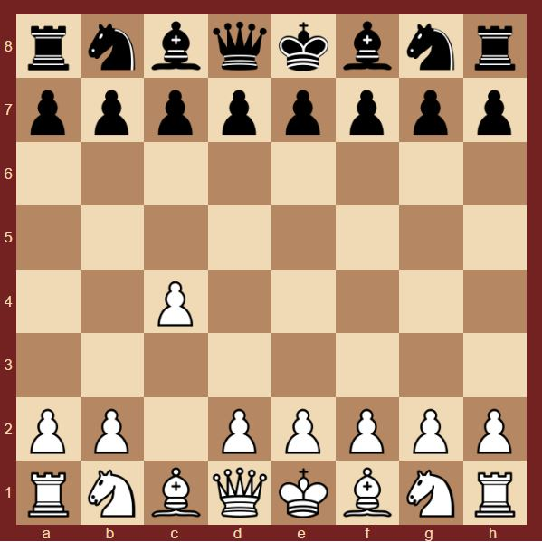

Английское начало
a
Английское начало - самый популярный на сегодняшний день фланговый дебют. Довольно вариативен, шансы имеют и белые, и черные. Входит в репертуар всех топ-шахматистов. Назад На главную
Английское начало - самый популярный на сегодняшний день фланговый дебют. Довольно вариативен, шансы имеют и белые, и черные. Входит в репертуар всех топ-шахматистов.